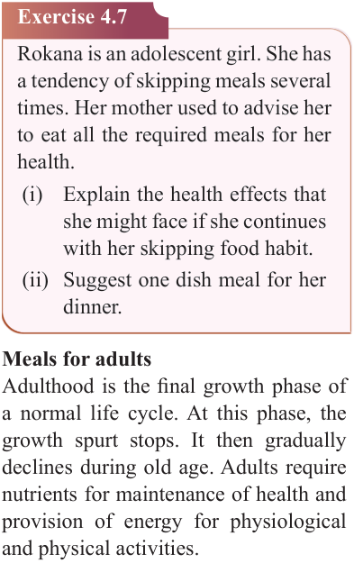

104


Food and Human Nutrition

Form Two

Exercise 4.7
Rokana is an adolescent girl. She has a tendency of skipping meals several times. Her mother used to advise her to eat all the required meals for her health.
(i) Explain the health effects that she might face if she continues with her skipping food habit.
(ii) Suggest one dish meal for her dinner.
Meals for adults
Adulthood is the final growth phase of a normal life cycle. At this phase, the growth spurt stops. It then gradually declines during old age. Adults require nutrients for maintenance of health and provision of energy for physiological and physical activities.
The following are important considerations
when planning meals for an adult:
(i) The meal should be balanced; however, the requirement for energy-giving food decreases with advancing age as the basal metabolism of an adult is reduced, accompanied by a decrease in physical activities.
Consumption of carbohydrate in the form of complex sugar is more encouraged than simple sugar. Excessive sugar intake is harmful to health because it increases the risk of obesity and type 2 diabetes.
(ii) Avoid foods containing high levels of cholesterol such as egg yolk and whole milk to reduce the risk of cardiovascular disease.
(iii) Protein is required for maintenance of worn-out tissues.
(iv) The adult meal should contain vitamins such as vitamin A, B and D. Special attention needs to be given to vitamin D since bone decalcification is very common in later years.
(v) The meal should contain iron and calcium foods for maintaining proper health of an adult.
Suggested suitable dishes for adults
Fruit salad, braised mixed vegetables, vegetable salad, stewed lentils, peas with groundnuts sauce, boiled brown rice, breakfast cereals, maize and kidney bean dish, loshoro, millet stiff porridge, spiced tea, stewed beans, grilled fish, roasted chicken, stewed meat, toasted sandwich with vegetables, mango and avocado juice.
Meals for old people
Old people experience physiological changes that affect their metabolism and nutritional requirements. Loss of teeth, low rate of food digestion and absorption as well as reduced gastric juice production are some of the changes that occur in old age. The following should be considered when planning meals for old people.
17/09/2025 16:30